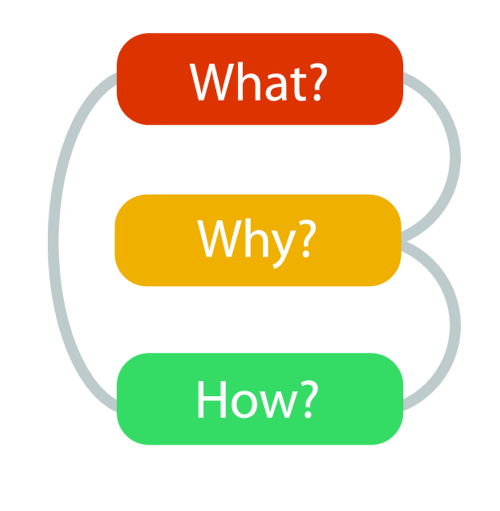

What, Why and How
Visual Analytics Framework
John Alexis Guerra Gómez| ja.guerrag[at]uniandes.edu.co| @duto_guerra
Jose Tiberio Hernández | jhernand[at]uniandes.edu.co
Universidad de los Andes
http://johnguerra.co/lectures/visualAnalytics_fall2019/02_What_Why_How/
Based onslides from Tamara Munzner
Visual Analytics Framework
Tables
- Attributes
- Items (rows)
Temporal!!!!
- Items (rows)
- Attributes
- At least one attrib is time-related
Networks and Trees
- Items (nodes)
- Links
- Attributes
Fields
- Continuous
- Sampled
- e.g. Brain scan
Geometry
- Spatial
- 2D or 3D
- Inherent shape
Example
SpaceTree
http://www.cs.umd.edu/hcil/spacetree/SpaceTree
TreeJuxtaposer
https://www.cs.ubc.ca/~tmm/papers/tj/TreeJuxtaposer
Marks and channels
What marks and channels?

What marks and channels?


What marks and channels?


What marks and channels?


Effectiveness and Expressiveness
Expressiveness
- Visual encoding should express all of, and only, the information in the dataset
- Ordered data should be shown in a way we perceive as ordered
- Match channel and data characteristics
Effectiveness
Encode most important attributes with highest ranked channels
[Automating the Design of Graphical Presentations of Relational Information. Mackinlay. ACM Trans. on Graphics (TOG) 5:2 (1986), 110–141]
Where does the ranking come from?
- Accuracy
- Discriminability
- Separability
- Popout
D3 v4 Tutorial
Step 0: Setup
- Add https://d3js.org/d3.v4.min.js to external resources